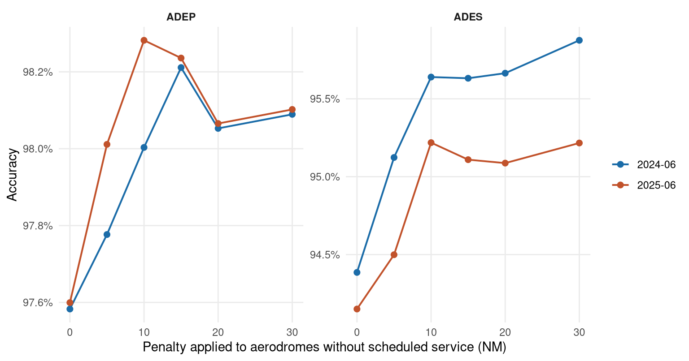

| Sample | Method | ADEP cov | ADEP acc | in-area cov | in-area acc |
|---|---|---|---|---|---|
| 2024-06 | M0_current | 60.66% | 97.55% | 65.83% | 97.64% |
| 2024-06 | M7_abstain | 72.41% | 98.21% | 77.70% | 98.35% |
| 2025-06 | M0_current | 63.59% | 97.45% | 69.29% | 97.53% |
| 2025-06 | M7_abstain | 74.85% | 98.24% | 80.05% | 98.50% |
Detecting departure and destination aerodromes from ADS-B
Version 3 — what the residual errors are made of
Summary
Version 3 follows a review of version 2. Auditing V2 against its own outputs found four review points only partly delivered and one delivered with a defect. Fixing them changed the results and, more usefully, changed what the remaining errors are made of.
Three things came out of it.
The out-of-area rule was pre-empting good answers. The border test won unconditionally over a qualifying aerodrome match, so Ponta Delgada — which sits about 8 NM inside the western edge of the ingestion box — had its departures labelled “out of area” with the aircraft still on the runway. A qualifying aerodrome now wins and the border label is the fallback.
Six of the seven most frequent departure errors were the same mistake: a scheduled civil airport losing to an adjacent military airfield. Izmir to Çiğli Airbase, Naples to Grazzanise, Cagliari to Decimomannu, Catania to Sigonella, Gdańsk to Cewice — 7 to 25 NM apart, and in every case the truth had scheduled service and the prediction did not. Ranking candidates on a distance penalised for aerodromes without scheduled service removes that class of error entirely.
Out-of-area is reported separately now, and it does not work as well as V2 implied. Precision is high — when the rule says out-of-area it is right about 93% of the time — but recall is only 10 to 15%. The concept is right and the geometric test is weak, for a reason given in Section 1.
What changed since version 2
Important
- Out-of-area precedence fixed — an aerodrome match now beats the border label.
- Scheduled-service tie-break added — candidates ranked on distance penalised for aerodromes without scheduled service, swept rather than assumed.
- Out-of-area reported explicitly — recall, precision and in-area figures beside the headline, so naming skill and abstention skill cannot be conflated.
- Per-side thresholds actually run — and found not to help (Section 4).
- Residual errors analysed rather than described (Section 3).
Version 1 and version 2 remain published unchanged. Their numbers are not restated here and are not comparable to these, because the scoring changed.
1 Reporting out-of-area
A flight from Dubai to Amsterdam has a departure aerodrome that no European ADS-B feed can name: the aircraft entered the area already airborne. V2 made OOA a valid answer and a valid truth, which was right. What it did not do was report the two abilities separately, and they are different abilities — naming an aerodrome, and recognising that no aerodrome can be named.
That matters because roughly one departure in twelve is genuinely out of area, so a method could buy accuracy by labelling liberally and an undecomposed table would show only the improvement.
| Sample | Method | truly OOA | labelled OOA | OOA recall | OOA precision |
|---|---|---|---|---|---|
| 2024-06 | M7_abstain | 7.94% | 0.83% | 9.69% | 92.25% |
| 2024-06 | M8_extrapolate | 7.94% | 1.67% | 20.36% | 96.78% |
| 2025-06 | M7_abstain | 8.30% | 1.31% | 14.84% | 93.91% |
| 2025-06 | M8_extrapolate | 8.30% | 1.17% | 13.05% | 92.79% |
High precision, low recall. The rule fires when a track endpoint sits within 30 NM of the bounding box edge — but an inbound flight’s first recorded sample appears wherever a receiver happens to pick it up, which is usually well inside the boundary rather than at it. Most out-of-area departures therefore never look like border cases at all.
The concept is sound; the geometric test is the wrong instrument. A phase-based test would fit the physics better: a track whose first sample is already in the cruise, neither near an aerodrome nor descending toward one, has an origin outside the observed area regardless of where it is. That is not implemented here and is the clearest single improvement available (Section 8).
2 The military-airfield confusion
The most frequent departure errors in version 2 formed one pattern:
| Truth (scheduled) | Predicted (not scheduled) | Apart |
|---|---|---|
| LTBJ Izmir | LTBL Çiğli Airbase | 14.9 NM |
| LIRN Naples | LIRM Grazzanise Air Base | 14.1 NM |
| LIEE Cagliari | LIED Decimomannu Air Base | 7.2 NM |
| LICC Catania | LICZ Sigonella Navy Air Base | 7.9 NM |
| EPGD Gdańsk | EPCE Cewice Naval Air Base | 24.6 NM |
A departing aircraft’s first recorded fix is often already a few miles into the climb, and where a military field sits between the airport and the departure track, the nearest-aerodrome rule takes it. Aviation knowledge resolves this without any new data: a commercial flight almost certainly used the aerodrome with scheduled service.
Candidates are therefore ranked on effective distance — real distance plus a fixed penalty for aerodromes without scheduled service — so a military field has to be clearly nearest rather than merely nearest. A penalty of zero reproduces the unbiased ranking exactly, which is why it is swept.

Accuracy peaks between 10 and 15 NM on both sides in both samples, then turns over. Coverage falls by under 0.6 pp across the entire range. 10 NM is the defensible choice — it is at or within a whisker of the peak in all four curves, and the flat top means the exact value is not load-bearing.
3 Where the remaining errors are
The tie-break does not reduce errors uniformly. It removes one class and introduces another, and the honest way to report that is by composition.
| Class | Flights | Share |
|---|---|---|
| Scheduled → unscheduled (the class the tie-break targets) | 0 | 0.00% |
| Unscheduled → scheduled (the tie-break’s own cost) | 464 | 59.26% |
| Truth out-of-area, an aerodrome named | 192 | 24.52% |
| Truth an aerodrome, labelled out-of-area | 23 | 2.94% |
The class the tie-break targets is now empty. What dominates instead is its mirror image: genuine movements at non-scheduled aerodromes — Biggin Hill, Northolt — pulled to the nearby hub. That is the price of the preference, it is visible, and it is smaller than what it replaced, which is why accuracy rose.
| Sample | Truth | Predicted | Flights | Apart |
|---|---|---|---|---|
| 2024-06 | LCLK | OLBA | 83 | 112.0 NM |
| 2025-06 | EGKB | EGLC | 59 | 10.5 NM |
| 2024-06 | EGKB | EGLC | 57 | 10.5 NM |
| 2025-06 | OOA | LPPD | 55 | — |
| 2024-06 | OOA | LPPD | 54 | — |
| 2025-06 | LFMD | LFMN | 49 | 13.1 NM |
| 2025-06 | OOA | GMMN | 35 | — |
| 2024-06 | OJAI | OLBA | 32 | 128.5 NM |
| 2025-06 | OOA | UGTB | 30 | — |
| 2024-06 | EGWU | EGLL | 26 | 5.2 NM |
| 2025-06 | EGWU | EGLL | 26 | 5.2 NM |
| 2024-06 | LFMD | LFMN | 24 | 13.1 NM |
Two further groups are visible and neither is addressable by threshold tuning. Long-range misassignments — Larnaca predicted as Beirut, 112 NM apart — are tracks whose first sample is far from either, where nearest-aerodrome has no real information. Dense terminal areas — Biggin Hill against London City at 10.5 NM, Cannes against Nice at 13.1 NM — need runway-level discrimination, which the HexAero layouts OPDI already computes could provide and this study does not use.
4 Per-side thresholds do not help
Version 2 noted that departures and arrivals behave differently and suggested fitting their thresholds separately. Doing it properly: fit each side’s threshold on 2024-06 by taking the most coverage available subject to beating the production algorithm’s accuracy, then apply to 2025-06.
Both sides select the same cell, 40 NM and 15,000 ft AGL. The frontier’s shape is similar enough on the two sides that no separation emerges, so the asymmetry between departures and arrivals is not something a threshold can fix — it is in how much information the endpoint carries, not in where the cut-off should sit.
| Configuration | ADEP cov | ADEP acc | ADES cov | ADES acc |
|---|---|---|---|---|
| Production (M0) | 63.59% | 97.45% | 61.97% | 95.55% |
| M7 default (20 NM / 15,000 ft) | 74.85% | 98.24% | 63.76% | 95.11% |
| M7 fitted on 2024-06 (40 NM / 15,000 ft) | 75.90% | 97.86% | 66.63% | 93.75% |
The fitted point transfers for departures — more coverage at better accuracy than production, on a sample it was not fitted to. It does not transfer for arrivals: it buys coverage at a real cost in accuracy. This is the third independent time this study has found that arrivals resist what works for departures.
5 Everything else, unchanged
The cascade still collapses onto its fallback rung, the aircraft denylist still outperforms the allowlist it replaced, trajectory extrapolation still fails on arrivals, cleaning is still incompatible with endpoint-based arrival detection, and track_id still merges and fragments flights at the rates version 2 measured. Those results are unaffected by the changes here and are not repeated; see version 2.
| Sample | Method | ADEP cov | ADEP acc | ADES cov | ADES acc | ADEP in-area cov | ADEP in-area acc |
|---|---|---|---|---|---|---|---|
| 2024-06 | M8_extrapolate | 76.29% | 95.53% | 53.20% | 67.07% | 80.35% | 96.34% |
| 2024-06 | M6_cascade | 85.41% | 84.50% | 85.39% | 75.42% | 88.05% | 89.03% |
| 2024-06 | M1_traffic | 83.42% | 86.51% | 81.96% | 78.55% | 87.45% | 89.63% |
| 2024-06 | M7_abstain | 72.41% | 98.21% | 64.41% | 95.63% | 77.70% | 98.35% |
| 2024-06 | M3_vert_rate | 63.79% | 97.08% | 59.97% | 95.01% | 69.16% | 97.27% |
| 2024-06 | M5_min_alt | 79.26% | 76.92% | 79.05% | 72.40% | 83.45% | 79.36% |
| 2024-06 | M0_current | 60.66% | 97.55% | 59.45% | 94.40% | 65.83% | 97.64% |
| 2024-06 | M2_on_ground | 27.33% | 97.70% | 30.34% | 96.41% | 29.58% | 98.05% |
| 2025-06 | M8_extrapolate | 77.41% | 95.60% | 51.73% | 65.15% | 82.55% | 96.33% |
| 2025-06 | M1_traffic | 84.90% | 86.97% | 83.45% | 78.24% | 89.34% | 90.12% |
| 2025-06 | M6_cascade | 86.95% | 84.92% | 86.86% | 75.19% | 89.95% | 89.52% |
| 2025-06 | M7_abstain | 74.85% | 98.24% | 63.76% | 95.11% | 80.05% | 98.50% |
| 2025-06 | M3_vert_rate | 66.72% | 96.90% | 62.54% | 95.53% | 72.65% | 97.05% |
| 2025-06 | M5_min_alt | 81.59% | 78.17% | 81.30% | 73.41% | 85.99% | 80.88% |
| 2025-06 | M0_current | 63.59% | 97.45% | 61.97% | 95.55% | 69.29% | 97.53% |
| 2025-06 | M2_on_ground | 28.87% | 95.43% | 33.38% | 92.74% | 31.26% | 96.10% |
6 Recommendations
6.1 Already implemented and validated in this study
These need no further research. They are in benchmarks/adep_ades.py and are measured above.
| Change | Evidence |
|---|---|
| Treat out-of-area as an answer, not a silence | Section 1 |
| Prefer a qualifying aerodrome over the border label | Section 1 |
| Rank candidates with a scheduled-service penalty (10 NM) | Section 2 |
| Drop only confirmed non-aeroplanes; keep unidentified airframes | V2 |
| Restrict candidates to large and medium aerodromes | V2 |
| Report naming skill and abstention skill separately | Section 1 |
6.2 Outstanding in the production pipeline
None of the above has been applied to src/opdi/pipeline/flights.py. The production flight list still uses the altitude-trend vote and still emits a null for both “outside the observed area” and “not determined”. A patch proposal follows so that the change can be reviewed rather than assumed.
7 Production patch proposal
Scope is src/opdi/pipeline/flights.py. tracks.py is untouched, so track_id continuity with every published release is unaffected — this changes the flight list, not track construction.
Replace _categorize_landing_take_off, which counts the sign of a 5-sample rolling-mean altitude difference and drops anything ambiguous, with the endpoint rule:
- Take the first and last state vector of the track.
- Find the nearest aerodrome by effective distance — great-circle distance plus 10 NM for aerodromes without scheduled service — among large and medium aerodromes only.
- Emit that aerodrome when the endpoint is within 20 NM of it and no more than 15,000 ft above its elevation, or is flagged
on_ground. - Otherwise, if the endpoint lies within 30 NM of the ingestion boundary, emit the out-of-area marker.
- Otherwise emit null.
Add two columns to the flight list, adep_source and ades_source, taking aerodrome, out_of_area or undetermined. This is the change with the highest value per line: those three states are currently collapsed into a single null, and they mean entirely different things to a downstream user.
Version. New version string for the flight list. Existing event types keep theirs, so published v0.0.2 data stays reproducible.
Aerodrome elevation comes from OurAirports and is missing for 3.09% of large and medium aerodromes. Where it is missing, fall back to the on_ground flag rather than treating the elevation as sea level — at a 5,000 ft aerodrome that error is the entire height threshold.
Before applying, a reviewer should check: that arrivals are not switched to this rule on the strength of the departure result, since arrivals fail to replicate every time; that the aerodrome reference used in production carries scheduled_service; and that the out-of-area marker is agreed with downstream consumers before it appears in a published column.
8 Limitations
- Out-of-area recall is 10–15%. The geometric border test is the wrong instrument; a phase-based test — first sample already in the cruise, not near or descending toward an aerodrome — should be tried next, and is the single clearest improvement available.
- The scheduled-service preference has a cost, and it is now the largest single class of remaining departure errors: genuine movements at Biggin Hill and Northolt pulled to the nearby hub.
- Dense terminal areas are unresolved. Biggin Hill against London City, Cannes against Nice. Runway-level matching using the HexAero layouts OPDI already computes is the obvious next step and is not used here.
- Six days, two three-day samples a year apart.
- Everything carried over from version 2: surface vehicles cannot be excluded by declaration,
track_idis taken as given, and cleaning is not applied.
9 Reproducing
python benchmarks/adep_ades.py --days 2025-06-05 2025-06-06 2025-06-07 \
--months 202506 --methods all --sweep-abstain \
--error-pairs M7_abstain --per-airport M7_abstain \
--diagnose-cascade --control m1 --sched-penalty-nm 15 \
--results-dir <dir>--results-dir writes the result tables as CSV to a local directory instead of S3. The bucket has a quota, and a write that exceeds it fails at the very end of a job — after the numbers are computed and printed but before they are stored.
Rendering this page needs no credentials, no database and no cluster.